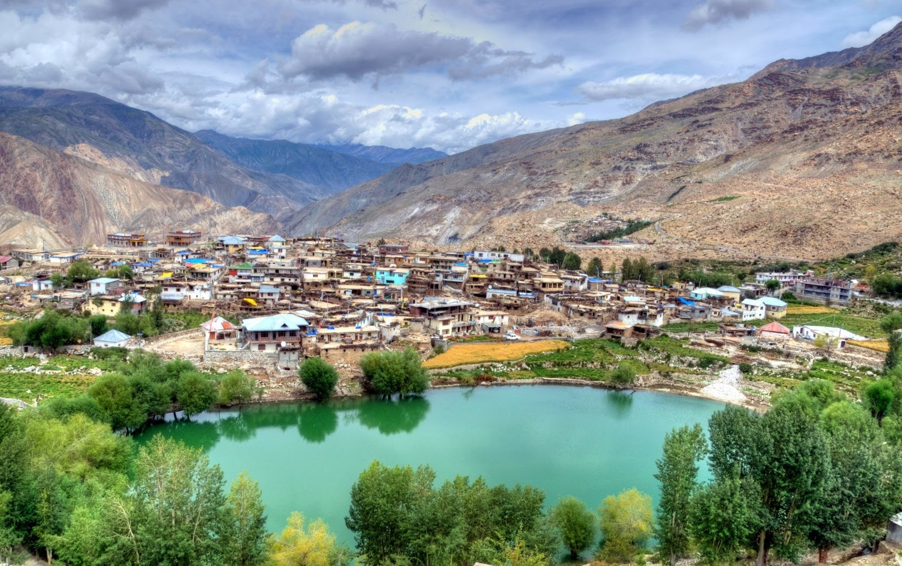

9 days Bike Trip - Starts From June 8th
Start Point - Chandigarh
Chandigarh will be the start point as bike will be rented from here
Day 1 (June 8) : Chandigarh to Shimla
- Distance : 115km
- Duration : 4 Hour
- Start Timing : 9am
- Approx Temperature : 20 - 32 'C
- Ride Level :
Night Stay at : Shimla
Day 2 (June 9) : Shimla to Chitkul
- Distance : 246km
- Duration : 9 Hour
- Start Timing : 7am
Night Stay at : Chitkul
If temperature is warm in Chitkul ,this can be excluded form Trip
Day 3 (June 10) : Chitkul to Nako/Tabo

- Distance: 150km
- Duration : 6 Hour
- Start Timing : 11am
Night Stay at : Nako/Tabo
Day 4 (June 11) : Nako/Tabo to Kaza (Spiti Valley)
- Distance : 112km
- Duration : 3 Hour
- Start Timing : 2pm
Night Stay at : Kaza
Day 5 (June 12) : Kaza - Hikkim - Komic - Langza - Kaza (Spiti Valley)
- Distance : 50km Circuit
- Duration : 4 Hour
- Start Timing : 8am
Night Stay at : Kaza
Day 6 (June 13) : Kaza - Kibber - Gette - Tashigong - Key (Spiti Valley)
- Distance : 70km Circuit
- Duration : 4-5 Hour
- Start Timing : 8am
Night Stay at : Kaza
Day 7 (June 14) : Kaza to Chandratal Lake vai Kunzum Pass to Batal
- Distance : 140
- Duration : 6 Hour
- Start Timing : 8 am
Night Stay at : Batal
Day 8 (June 15) : Batal to Manali via Rohtang Pass
- Distance : 120km
- Duration : 7 Hour
- Start Timing : 9am
Night Stay at : Manali
Day 9 (June 16) : Manali - Kullu - Chandigarh
- Distance : 300km
- Duration : 11 Hour
- Start Timing : 6am
Bike Rent
Bike will be rented from Chandigarh. Royal Enfield with tubeless would be preferred.
Stay
All stay will be in budget hotels, hostels and Home Stay.
Must have things
- Biker Safety Jacket
- Kneed Guard
- Air Proof Gloves and winter caps
- Raincoat and water Proof luggage cover
- Torch, High capacity Powerbank
- Energy Bars/Dry Fruits
- General Medicines ,ORS powder
Budget
Approximately ~ 33k ( Excluding Flight tickets)
Breakup :
Bike ~ 1200/1400 per day + ( ~ 5000 Petrol)
Hotel ~ 1K per day
Food ~ 600 Rs per Day
Contact
WhatsApp me at 09980016094
- Prashant
DM me on Instagram :
NeverEndingRoadway
Or mail at neverendingroadway@gmail.com
Important
This is personal bike trip and not a commercial trip. There is no service like "Pay and Go". Contact for more info.